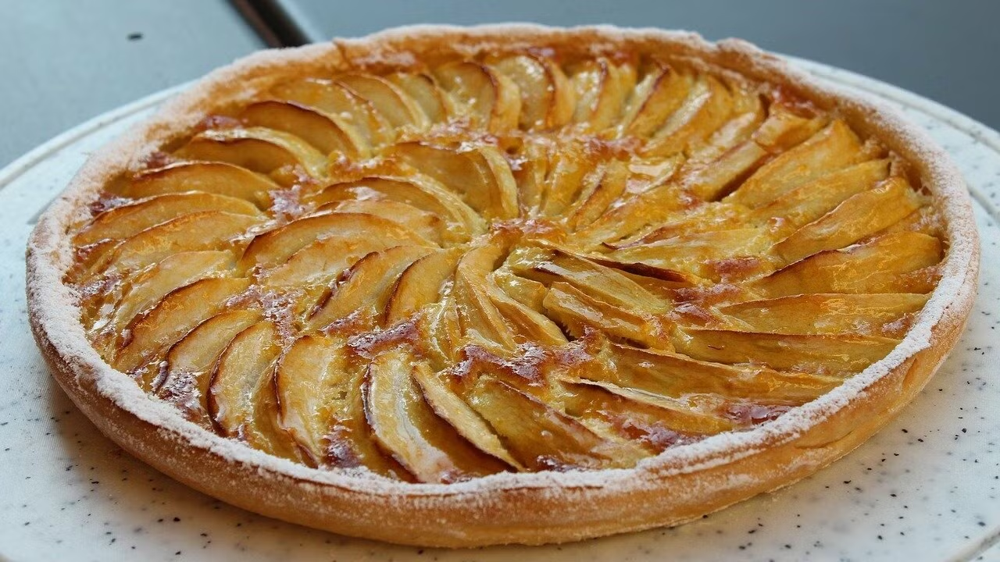

Omas Apfelkuchen!

Zutaten:
- 200g Mehl
- 100g Zucker
- 2 Eier
- 100ml Milch
- 3 Äpfel, geschält und in Stücke geschnitten
- 1 TL Zimt
- 50g Butter
- 1 Prise Salz
Nährwerte pro Stück:
Kalorien: 250 kcal
Fett: 12g
Kohlenhydrate: 30g
Eiweiß: 4g
Zubereitung:
- Backofen auf 180°C Ober-/Unterhitze vorheizen.
- Butter in einem kleinen Topf schmelzen und abkühlen lassen.
- Mehl, Zucker, Salz und Zimt in einer Schüssel vermengen.
- Die geschmolzene Butter, Eier und Milch hinzufügen und gut verrühren.
- Äpfel unter den Teig heben und in eine gefettete Springform geben.
- Im vorgeheizten Ofen 45-50 Minuten backen, bis der Kuchen goldbraun ist und ein Zahnstocher sauber herauskommt.
- Vor dem Servieren abkühlen lassen.